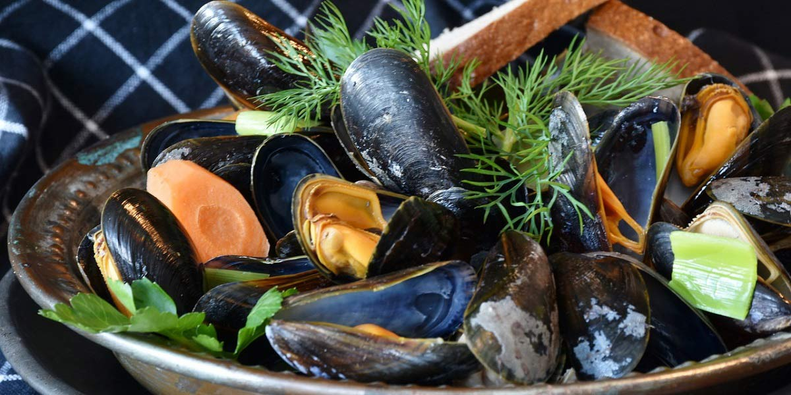

Moules Mariniere
Recipe Specification
Ingredients List
| Ingredients | Quantity |
|---|---|
| Mussels | 1.75kg |
| Garlic Clove | 2x1 |
| Shallots | 2x1 |
| Unsalted Butter | 15g |
| Parsley | 40g |
| Bay leaf | 1x1 |
| Thyme | 2 sprigs |
| White Wine | 100ml |
| Vegetable Oil | 20ml |
Yield: 2 portions
Preparation
- Wash Mussels under cold running water and discard any open that don’t close when squeezed.
- Peel and crush garlic cloves.
- Peel and finely slice shallots.
- Remove beards and barnacles from shell before scrubbing with brush.
Cooking Instructions
- Place a large sauté pan over a medium/high heat and add garlic, shallots, thyme, bay leaf and butter.
- Reduce heat and cook for 3-4 minutes until softened .
- Add mussels and wine to the pan, turn the heat up and cover pan with a lid. Cook for 3-4 minutes and give the pan a shake every now and then.
- Once all mussels have opened, remove lid, remove sprig of thyme and remove bay leaf. Add double cream and chopped parsley before taking pan off the heat.

Serving Suggestions
Serve with crusty bread to soak up sauce.
Storing instructions
Consume when made.